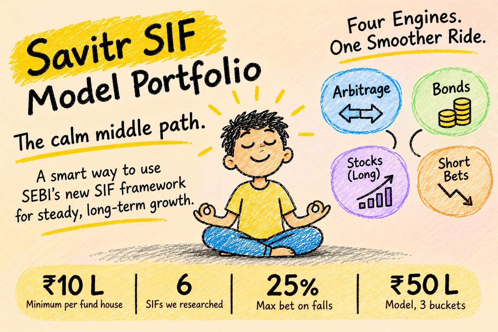

SIF: the calm middle path for serious money
SEBI created a new kind of fund in 2025. It sits between a mutual fund and a PMS. Here is what a SIF is, the ones we researched, and exactly how we would run ₹50 lakh in them.


- A SIF is a mutual fund that is also allowed to make money when markets fall, with up to 25% of the fund.
- You need ₹10 lakh with one fund house. Your money stays under mutual fund rules, with daily NAV and full statements.
- We studied six SIFs. The oldest is about one year old. So we judged the people and the method more than the early returns.
- Our ₹50 lakh model splits money into three buckets: Protect, Steady and Grow. Rules decide when to move money, not feelings.
- In our six year example, the model ends close to a pure equity fund. The difference is the road: a 5.5% dip instead of a 26% crash.
Anjali tai sold her family plot last year.
She is 52, a school principal in Kothrud. After tax, ₹50 lakh landed in her bank account. Her son's wedding is maybe two years away. Retirement is eight years away.
"FD gives 7%, and then I pay 30% tax on it," she told me. "Shares scare me. I saw my brother lose sleep in 2025. Is there anything in between?"
Two years ago, my honest answer would have been "not really". Today, there is something new. It is called a SIF.
Anjali tai is a made up name. Her question is one I hear every week.
What is a SIF, in plain words?
SIF stands for Specialised Investment Fund. SEBI created it in 2025. It is run by regular mutual fund houses, under mutual fund rules. But it is allowed to do a few things a normal mutual fund cannot.
It can bet on fallsUp to 25% of the fund can make money when a share or the market goes down. A normal fund can only gain when prices rise.
It needs a bigger ticketAt least ₹10 lakh with one fund house, across its SIFs. This keeps it for serious, long term money.
It keeps the same safety netYour money stays with the fund house and its trustee. Daily NAV, SEBI rules, full statements. Savitr never holds your money.
How does it make money?
The SIFs we like do not depend on one thing going right. They mix four kinds of earnings.
The last one is the new part. It is called "long-short". The fund owns good companies, and keeps a small bet that some weak ones will fall. When the market drops, those bets earn and soften the fall.
Many SIF types. We picked three.
SEBI allows several kinds of SIF. We focused on the three that fit a calm, long term family portfolio.
How we checked each one
Every SIF went through the same six checks we use for every product on the Savitr list.
PeopleHas the manager run this style before, with real money?
ParentIs the fund house strong, and is research in charge, not sales?
ProcessDid this really need a SIF, or is it an old product in new clothes?
PortfolioWhat is really inside, and how much is hedged?
PerformanceEarly numbers, checked against the right comparison.
PriceIs the cost fair next to a similar mutual fund?
Six SIFs made our research list. All are from large, well known fund houses. Four are hybrid long-short, one is an asset allocator, one is an equity long-short. The oldest launched in October 2025.
We picked different styles on purpose. One hybrid leans on bonds and arbitrage. Another shifts into shares when markets look cheap. A third uses option shields to cap both loss and gain. The asset allocator adds gold and silver. The equity long-short uses a computer model that scores companies on 40+ factors.
We share the exact SIF names and our star ratings with clients, after we understand their needs. A SIF that fits one family can be wrong for another.
Our method: Protect & Grow
Most people think the biggest risk is picking a bad fund. It is not. The biggest risk is a bad year at the wrong time. The market falls just when you need money, and you are forced to sell low.
Look at two investors. Both start with ₹50 lakh. Both get one year of +25% and one year of −20%. Both need ₹5 lakh after year one. The only difference is the order.
Investor A lost ₹2.25 lakh only because the bad year came first, and the ₹5 lakh had to come out of a fallen portfolio.
Three buckets. Every rupee gets a job.
Here is exactly how the ₹50 lakh is placed.
Four SIFs, from four different fund houses, ₹10 lakh each. That is not by chance. SEBI needs ₹10 lakh per fund house, so ₹50 lakh fits exactly four SIFs plus a Protect bucket.
Five rules. No guesswork.
Review once a yearIf every bucket is within 3 points of 20, 40, 40, we do nothing.
Good year: book profit from GrowIf Grow goes above 43%, we trim it back to 40% and refill Steady and Protect.
Need money: Protect pays firstNever from Grow in a bad year.
Bad year: buy more GrowIf Grow falls below target, we move money from Steady into it. We buy when prices are low.
Respect tax and the ₹10 lakh lineWe switch only after 12 months, so gains get long term tax. Every SIF stays above ₹10 lakh per fund house.
Six years, side by side
Let us run the model for six years, with a crash in year 3 and a ₹5 lakh family need in that same year. We compare it with someone who put all ₹50 lakh in a normal equity fund and took out ₹5 lakh in the crash.
- Ends at ₹74.1 lakh
- Worst year: about −5.5% before the withdrawal
- Lowest point: ₹53.9 lakh
- Sold shares at the bottom? No
- Ends at ₹76.6 lakh
- Worst year: about −26% before the withdrawal
- Lowest point: ₹47 lakh
- Sold shares at the bottom? Yes, ₹5 lakh
Let me be honest. In this example, the equity fund ends slightly ahead. But only if you held on after watching ₹70 lakh become ₹47 lakh in one year.
Most people don't. They panic and sell, or they stop investing. The SIF model never fell more than about 6% in a year, so staying invested was easy. In real life, that is where most of the gap comes from.
Good to know, honestly
- Taxed like mutual funds, not PMS. No tax on trades inside the fund.
- Most hybrid SIFs keep 65%+ in equity and arbitrage, so gains after 12 months are taxed at 12.5%. We confirm this for each fund.
- Some SIFs let you withdraw only on set days of the week.
- Small exit loads, often around 0.5% within 30 days.
- A brand new category. No SIF has lived through a full market crash yet.
- Hedges reduce falls. They do not remove them. You can still lose money.
- Fund houses rate them "very high risk" themselves.
- Results depend a lot on the manager's skill.
Who this suits
A SIF model makes sense if you have ₹25 lakh or more of long term money, you want better than FD returns, and you don't want the full ride of the stock market. It is not for money you need in the next 12 months, and not for someone who wants maximum growth at any cost.
What Anjali tai did
Her son's wedding money went into Protect. The rest went into the Steady and Grow buckets. She knows the plan has a bad year built in. She also knows that in that year, her wedding money will not be touched.
"So I don't have to check the market every day?" she asked.
No, tai. You read one page from us after each yearly review. That is it.
My take
SIFs are the most interesting new option for Indian families in years. They bring tools that were only for the very rich into a regulated mutual fund, at ₹10 lakh.
But they are new. So we don't bet on one fund or one manager. We spread across styles, wrap them in rules, and keep the money you need soon far away from the market.
The calm middle path is not about avoiding falls. It is about never being forced to sell in one.
See you in the next one,
Atharva
Want the SIF model built for your money?
Send me your WhatsApp number. I will reply personally and build the three buckets around your amount, goals and timeline. No spam. No calls unless you ask.
Sources: Savitr SIF Model Portfolio, October 2026 community edition, based on fund house documents and public reports as of October 2026. The return for the oldest hybrid SIF is for its regular plan from launch (20 October 2025) to 31 July 2026, under one year, as reported publicly. All model, bucket and six year figures use assumed returns and are illustrations, not a forecast.
Disclosure: Savitr Investments is an AMFI registered Mutual Fund Distributor (ARN 291687) and earns commission on products it distributes, including SIFs. This is for information and education only, not investment advice or an offer to buy or sell. Star ratings and the research list are Savitr's own view, not a SEBI or AMFI rating. Tax rules can change and depend on each fund's holdings; consult your tax adviser. Mutual fund and SIF investments are subject to market risks, read all scheme related documents carefully. Anjali tai is a fictional character. Atharva, Savitr Investments, Pune.